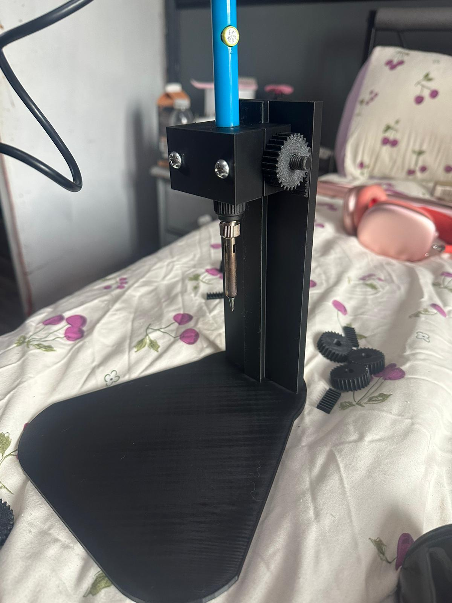
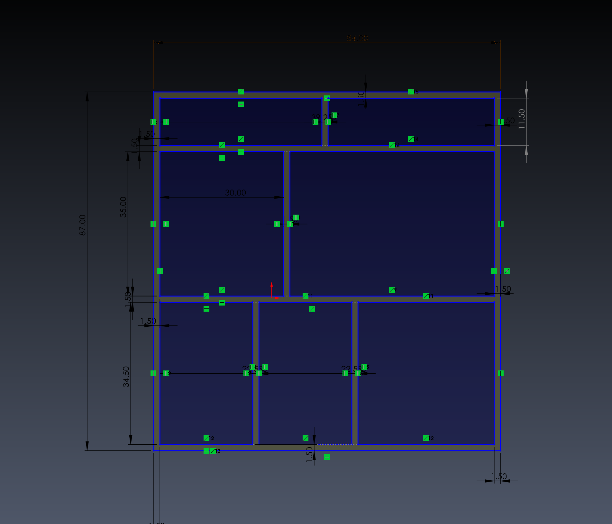
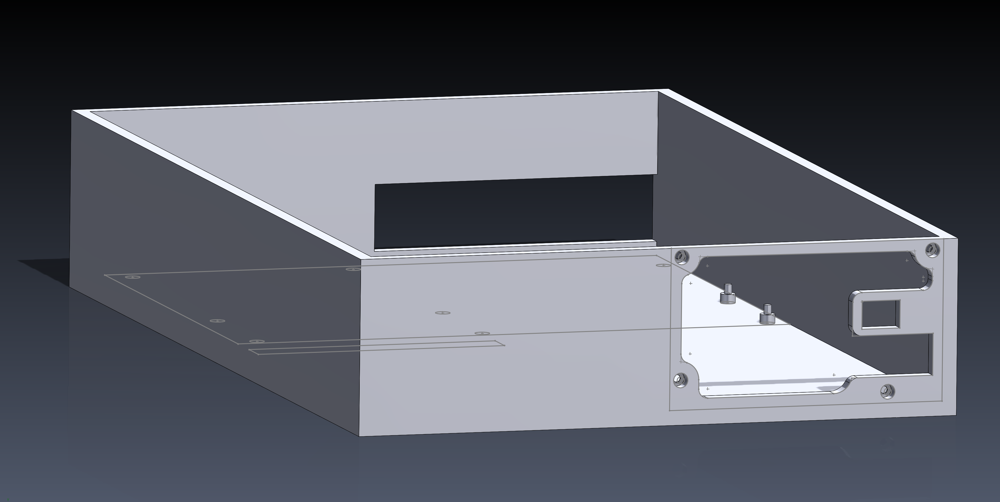
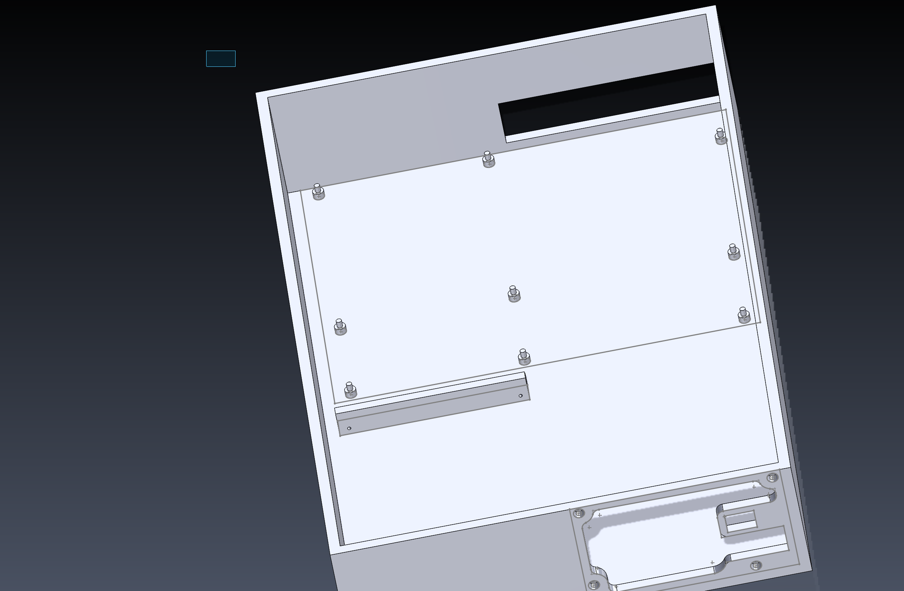
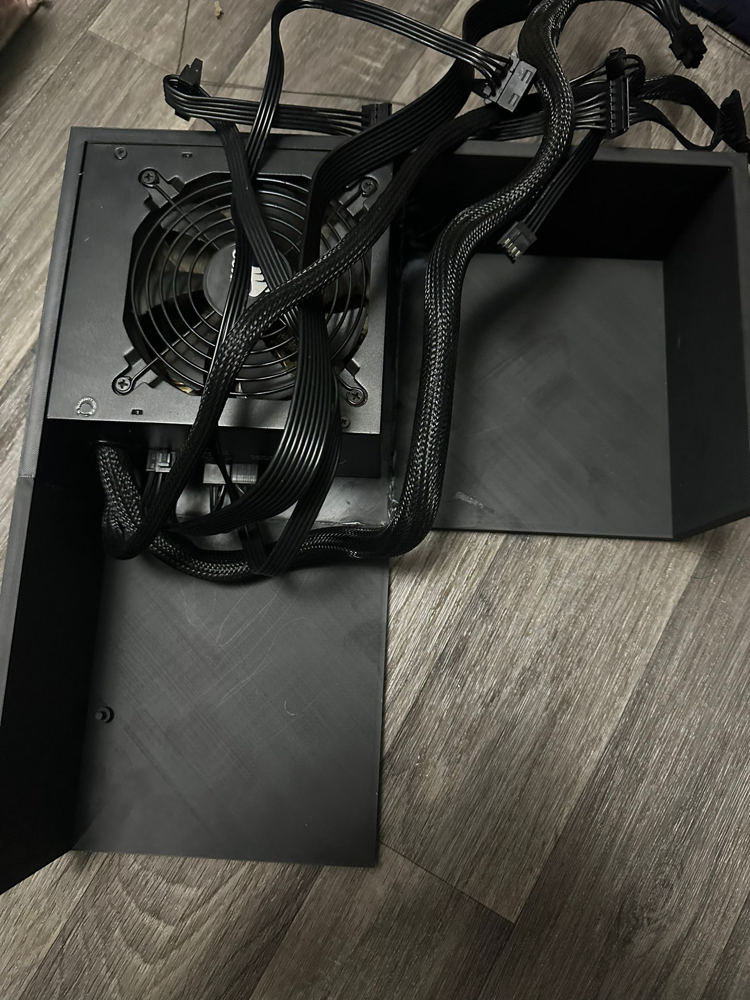
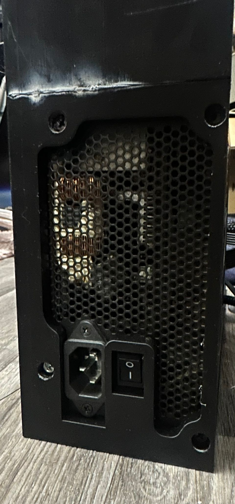

So much prototyping
I’ve been really busy over the past week and I’ve had a few projects eat up my time. I’m working on a lot at once at the moment, so progress on each one is a bit sporadic.
Brass insert inserter (soldering iron stand)
First up: I designed a brass insert inserter that holds the soldering iron and lets me push inserts in perpendicular to the surface.
The idea is a drill-press-style motion: the iron is held firmly, and I turn a wheel to drive a rack-and-gear mechanism. That gives me a controlled, straight plunge — less wobble while pushing, and cleaner inserts.
The first design came out great for a quick mock-up: I measured the soldering iron, built a holder with heat-set inserts so it can clamp the iron with enough force, and designed the gear + rack system to move it up and down. The main body slots onto the stand via a dovetail.
Unfortunately, I made a couple of classic prototype mistakes:
- I miscalculated the space for the rack. The gear could fit, but the rack couldn’t once the gear was installed.
- I wanted a gear on each side so the head is pulled evenly, but I missed a dimension in the sketch, so the second gear can’t be inserted while the head is on the stand.
And in the end, because I printed the stand vertically, I managed to snap it.
The fix is straightforward:
- correct the gear placement
- split the stand into two pieces
- print the stand flat, then assemble

Printer + storage unit (workshop tidy-up)
Next project is a workshop organisation one. I want to move my printers into a dedicated unit with storage for filament/resin, both printers, and the curing/wash station.
I’ve got some leftover lumber in the garden (9" × 1.5" — not sure on length, but it’s long enough for what I need). I measured the space I have available:
- 84" wide
- 87" high
- 18" deep
This means I’ll need to join two planks together to make the unit.
I’ve mocked up a design in SolidWorks, measured the printers, and laid out where I want everything. I’ve got the base frame designed, and I’ve cut the first plank to size — but there’s still a lot to do. I’ll post an update once it’s progressed.
For now, here’s the (fully constrained, of course) CAD mock-up:

MUFT — Modular Upgradable Fat Top
And finally: an absurd project.
(Correction: MUFT stands for Modular Upgradable Fat Top.)
I’ve been struggling with my laptop performance because it has no GPU. The CPU is decent, but without a GPU, SolidWorks and other GPU-heavy tasks (including slicing) can be painfully slow.
I’d love to buy a beast laptop, but they’re expensive and still limited by the constraints of the form factor. Luckily, I’ve accumulated a fair amount of spare PC parts over the years — enough to build a couple of PCs in a pinch.
I’m planning to upgrade my main PC soon (within the next few months), and that hardware is decent — definitely better than most of the spares.
So I’m building something ridiculous: not a laptop, but a fat top.
Introducing: the M.U.F.T — Modular Upgradable Fat Top.
The goal is a portable machine that:
- uses full-size hardware (full ATX — no micro-ATX compromises)
- has a monitor strapped to the top
- has an integrated trackpad/keyboard/speakers
This version won’t run off battery (at least not yet), but the aim is something I can carry around that still fits proper components.
Constraints and layout-wise, I need room for:
- the PSU (unfortunately my main height constraint right now because I’m using what I have)
- the GPU (I’ve got a riser cable so it can lie flat with standoffs)
- the motherboard (easy enough: standard mounting hole pattern)
I’m also planning to add support points under the motherboard (in non-critical areas) to prevent bowing when swapping hardware.
The first design isn’t pretty, and I definitely haven’t designed it with printing in mind — but it’s a starting point to prove everything fits, then iterate from there.


I’ve split the case into 6 pieces for printing in ABS, and so far I’ve got 3 printed.
Next step is test-fitting everything, seeing where reality disagrees with CAD, and iterating. One thing I’m confident about: everything will be printed flat and assembled with bolts for strength.


Sorry for the long post — I did a lot this time. I’ll try to update more frequently on each project.